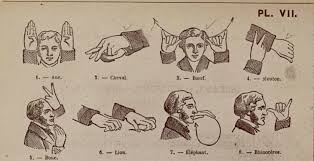

Chapter 2
Sub fields of Anthropology
Anthropology has 4 sub fields
1. Physical/Biological Anthropology
Most closely related to the natural
sciences, particularly biology.
Human biology affects or even explains some aspects of behavior, society, and culture like marriage
patterns, sexual division of labor, gender ideology etc. The features of culture in turn have
biological effects like the standards of attractiveness, food preferences, and human
sexuality.
Physical anthropology is essentially concerned with two broad areas of investigation: human
evolution and genetics.
Evolution of human brain
2. Archaeological Anthropology
Archaeological anthropology or simply archaeology studies the ways of lives of past peoples
by excavating and analysing the material culture/physical remains (artefacts, features and
eco-facts) they left behind.
Archaelogists studying fossil remains
3. Linguistic Anthropology
Anthropological linguistics studies human language as a
cultural resource and speaking as a cultural practice in its social and cultural context, across
space and time.

sign language
4. Socio-cultural Anthropology
Socio-cultural anthropology is the largest sub-fields of anthropology
It deals with human society and
culture.
Ethnoographer on field work
© Besufikad Girma/ EiABC